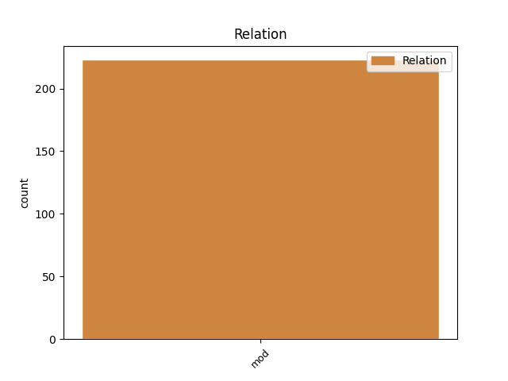
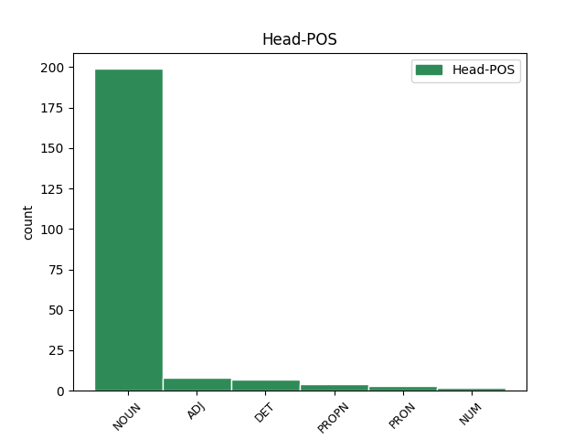
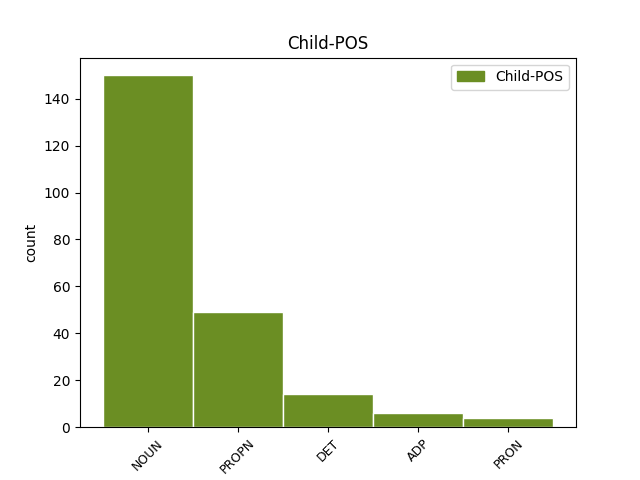

Distribution of features within this leaf



Agreement Rules sorted by frequency.
- When the dependent token is the modifer(mod) of the head token, and the dependent token is NOUN.
1 to _ _ _ _ 0 _ _ _
2 so _ _ _ _ 0 _ _ _
3 pač _ _ _ _ 0 _ _ _
4 eee _ _ _ _ 0 _ _ _
5 kombinacija _ _ _ _ 0 _ _ _
6 in _ _ _ _ 0 _ _ _
7 slalom _ _ _ _ 0 _ _ _
8 in _ _ _ _ 0 _ _ _
9 eee _ _ _ _ 0 _ _ _
10 če _ _ _ _ 0 _ _ _
11 računamo _ _ _ _ 0 _ _ _
12 da _ _ _ _ 0 _ _ _
13 eem _ _ _ _ 0 _ _ _
14 dodaš _ _ _ _ 0 _ _ _
15 še _ _ _ _ 0 _ _ _
16 eno _ _ _ _ 0 _ _ _
17 disciplino _ _ _ _ 0 _ _ _
18 lahko _ _ _ _ 0 _ _ _
19 osvojiš _ _ _ _ 0 _ _ _
20 toliko _ _ _ _ 0 _ _ _
21 točk _ _ _ _ 0 _ _ _
22 kot _ _ _ _ 0 _ _ _
23 jih _ _ _ _ 0 _ _ _
24 je _ _ _ _ 0 _ _ _
25 ona _ _ _ _ 0 _ _ _
26 je _ _ _ _ 0 _ _ _
27 pa _ _ _ _ 0 _ _ _
28 zares _ _ _ _ 0 _ _ _
29 eee _ _ _ _ 0 _ _ _
30 vsestranska _ _ _ _ 0 _ _ _
31 v _ _ _ _ 0 _ _ _
32 formi _ _ _ _ 0 _ _ _
33 od _ _ _ _ 0 _ _ _
34 štarta _ _ _ _ 0 _ _ _
35 do _ _ _ _ 0 _ _ _
36 cilja _ _ _ _ 0 _ _ _
37 od _ _ _ _ 0 _ _ _
38 začetka _ _ _ _ 0 _ _ _
39 sezone _ _ _ _ 0 _ _ _
40 do _ _ _ _ 0 _ _ _
41 konca konec NOUN Ncmsg Case=Gen|Gender=Masc|Number=Sing 0 _ _ _
42 sezone sezona NOUN Ncfsg Case=Gen|Gender=Fem|Number=Sing 41 mod _ msd=Sozer|word=sezone
43 in _ _ _ _ 0 _ _ _
44 imam _ _ _ _ 0 _ _ _
45 same _ _ _ _ 0 _ _ _
46 pohvale _ _ _ _ 0 _ _ _
47 zanjo _ _ _ _ 0 _ _ _
1 kvinton _ _ _ _ 0 _ _ _
2 plošča plošča NOUN Ncfsn Case=Nom|Gender=Fem|Number=Sing 0 _ _ _
3 razirklinga Razirklinga PROPN Npfsn Case=Nom|Gender=Fem|Number=Sing 2 mod _ msd=Slzei|word=Razirklinga
4 in _ _ _ _ 0 _ _ _
5 skladba _ _ _ _ 0 _ _ _
6 led _ _ _ _ 0 _ _ _
1 te _ _ _ _ 0 _ _ _
2 proge _ _ _ _ 0 _ _ _
3 gor _ _ _ _ 0 _ _ _
4 recimo _ _ _ _ 0 _ _ _
5 eee _ _ _ _ 0 _ _ _
6 sedežnice _ _ _ _ 0 _ _ _
7 vlečnice _ _ _ _ 0 _ _ _
8 pa _ _ _ _ 0 _ _ _
9 to ta DET Pd-nsn Case=Nom|Gender=Neut|Number=Sing|PronType=Dem 0 _ _ _
10 vse ves DET Pg-nsn Case=Nom|Gender=Neut|Number=Sing|PronType=Tot 9 mod _ msd=Zc-sei|word=vse
11 je _ _ _ _ 0 _ _ _
12 recimo _ _ _ _ 0 _ _ _
13 šest _ _ _ _ 0 _ _ _
14 petnajst _ _ _ _ 0 _ _ _
15 trinajst _ _ _ _ 0 _ _ _
16 in _ _ _ _ 0 _ _ _
17 ob _ _ _ _ 0 _ _ _
18 in _ _ _ _ 0 _ _ _
19 proga _ _ _ _ 0 _ _ _
20 je _ _ _ _ 0 _ _ _
21 recimo _ _ _ _ 0 _ _ _
22 rdeča _ _ _ _ 0 _ _ _
23 narisana _ _ _ _ 0 _ _ _
24 pač _ _ _ _ 0 _ _ _
25 rdeča _ _ _ _ 0 _ _ _
26 srednje _ _ _ _ 0 _ _ _
27 težka _ _ _ _ 0 _ _ _
28 ali _ _ _ _ 0 _ _ _
29 pa _ _ _ _ 0 _ _ _
30 modra _ _ _ _ 0 _ _ _
31 pa _ _ _ _ 0 _ _ _
32 je _ _ _ _ 0 _ _ _
33 številka _ _ _ _ 0 _ _ _
34 sedem _ _ _ _ 0 _ _ _
35 ali _ _ _ _ 0 _ _ _
36 pa _ _ _ _ 0 _ _ _
37 ta _ _ _ _ 0 _ _ _
38 je _ _ _ _ 0 _ _ _
39 devet _ _ _ _ 0 _ _ _
40 ali _ _ _ _ 0 _ _ _
41 pa _ _ _ _ 0 _ _ _
42 ne _ _ _ _ 0 _ _ _
43 vem _ _ _ _ 0 _ _ _
44 koliko _ _ _ _ 0 _ _ _
1 eee _ _ _ _ 0 _ _ _
2 govoril _ _ _ _ 0 _ _ _
3 sem _ _ _ _ 0 _ _ _
4 v _ _ _ _ 0 _ _ _
5 tem _ _ _ _ 0 _ _ _
6 mandatu _ _ _ _ 0 _ _ _
7 s z ADP Si Case=Ins 12 mod _ msd=Do|word=s
8 tretjo _ _ _ _ 0 _ _ _
9 oziroma _ _ _ _ 0 _ _ _
10 z _ _ _ _ 0 _ _ _
11 drugo _ _ _ _ 0 _ _ _
12 upravo uprava NOUN Ncfsi Case=Ins|Gender=Fem|Number=Sing 0 _ _ _
13 eee _ _ _ _ 0 _ _ _
14 z _ _ _ _ 0 _ _ _
15 tretjo _ _ _ _ 0 _ _ _
16 v _ _ _ _ 0 _ _ _
17 zadnjih _ _ _ _ 0 _ _ _
18 petih _ _ _ _ 0 _ _ _
19 letih _ _ _ _ 0 _ _ _
1 ampak _ _ _ _ 0 _ _ _
2 tisto tisti DET Pd-nsn Case=Nom|Gender=Neut|Number=Sing|PronType=Dem 0 _ _ _
3 kar kar PRON Pr-nsn Case=Nom|Gender=Neut|Number=Sing|PronType=Rel 2 mod _ msd=Zz-sei|word=kar
Disagree Examples:
1 na _ _ _ _ 0 _ _ _
2 obletnico obletnica NOUN Ncfsa Case=Acc|Gender=Fem|Number=Sing 0 _ _ _
3 titove _ _ _ _ 0 _ _ _
4 smrti smrt NOUN Ncfsg Case=Gen|Gender=Fem|Number=Sing 2 mod _ msd=Sozer|word=smrti
5 eee _ _ _ _ 0 _ _ _
6 pa _ _ _ _ 0 _ _ _
7 tudi _ _ _ _ 0 _ _ _
8 na _ _ _ _ 0 _ _ _
9 vašo _ _ _ _ 0 _ _ _
10 taščo _ _ _ _ 0 _ _ _
11 ste _ _ _ _ 0 _ _ _
12 se _ _ _ _ 0 _ _ _
13 spomnili _ _ _ _ 0 _ _ _
1 množičen _ _ _ _ 0 _ _ _
2 morilec _ _ _ _ 0 _ _ _
3 ali _ _ _ _ 0 _ _ _
4 eee _ _ _ _ 0 _ _ _
5 zakrknjen _ _ _ _ 0 _ _ _
6 storilec storilec NOUN Ncmsn Case=Nom|Gender=Masc|Number=Sing 0 _ _ _
7 kakšnega _ _ _ _ 0 _ _ _
8 hudega _ _ _ _ 0 _ _ _
9 kaznivega _ _ _ _ 0 _ _ _
10 dejanja dejanje NOUN Ncnsg Case=Gen|Gender=Neut|Number=Sing 6 mod _ msd=Soser|word=dejanja
11 ne _ _ _ _ 0 _ _ _
12 razmišlja _ _ _ _ 0 _ _ _
13 o _ _ _ _ 0 _ _ _
14 kazni _ _ _ _ 0 _ _ _
1 to _ _ _ _ 0 _ _ _
2 so _ _ _ _ 0 _ _ _
3 ljudje _ _ _ _ 0 _ _ _
4 ki _ _ _ _ 0 _ _ _
5 imajo _ _ _ _ 0 _ _ _
6 globlje _ _ _ _ 0 _ _ _
7 eee _ _ _ _ 0 _ _ _
8 pobude _ _ _ _ 0 _ _ _
9 za _ _ _ _ 0 _ _ _
10 za _ _ _ _ 0 _ _ _
11 storitev storitev NOUN Ncfsa Case=Acc|Gender=Fem|Number=Sing 0 _ _ _
12 tega _ _ _ _ 0 _ _ _
13 dejanja dejanje NOUN Ncnsg Case=Gen|Gender=Neut|Number=Sing 11 mod _ msd=Soser|word=dejanja
14 in _ _ _ _ 0 _ _ _
15 brez _ _ _ _ 0 _ _ _
16 skrbi _ _ _ _ 0 _ _ _
17 bodite _ _ _ _ 0 _ _ _
18 da _ _ _ _ 0 _ _ _
19 jim _ _ _ _ 0 _ _ _
20 hujša _ _ _ _ 0 _ _ _
21 zagrožena _ _ _ _ 0 _ _ _
22 kazen _ _ _ _ 0 _ _ _
23 ne _ _ _ _ 0 _ _ _
24 bo _ _ _ _ 0 _ _ _
25 preprečila _ _ _ _ 0 _ _ _
26 da _ _ _ _ 0 _ _ _
27 to _ _ _ _ 0 _ _ _
28 naredijo _ _ _ _ 0 _ _ _
1 baje _ _ _ _ 0 _ _ _
2 da _ _ _ _ 0 _ _ _
3 si _ _ _ _ 0 _ _ _
4 nazaj _ _ _ _ 0 _ _ _
5 v _ _ _ _ 0 _ _ _
6 dolino _ _ _ _ 0 _ _ _
7 prišla _ _ _ _ 0 _ _ _
8 dvajset _ _ _ _ 0 _ _ _
9 kil kila NOUN Ncfpg Case=Gen|Gender=Fem|Number=Plur 10 mod _ msd=Sozmr|word=kil
10 težja težek ADJ Agcfsn Case=Nom|Degree=Cmp|Gender=Fem|Number=Sing 0 _ _ _
11 [audience:laughter] _ _ _ _ 0 _ _ _
1 eee _ _ _ _ 0 _ _ _
2 stara star ADJ Agpfsn Case=Nom|Degree=Pos|Gender=Fem|Number=Sing 0 _ _ _
3 osemdeset _ _ _ _ 0 _ _ _
4 let leto NOUN Ncnpg Case=Gen|Gender=Neut|Number=Plur 2 mod _ msd=Sosmr|word=let
5 zelo _ _ _ _ 0 _ _ _
6 živahna _ _ _ _ 0 _ _ _